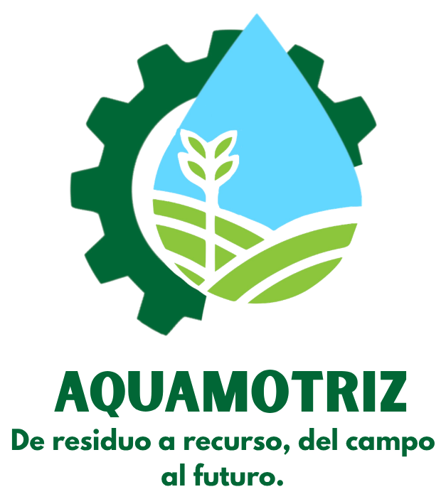

Recuperar valor donde otros ven chatarra
Los electrodomésticos en desuso (caminadoras, bombas de agua, lavarropas, ventiladores, herramientas) poseen motores eléctricos funcionales metálicos o de materiales durables, que terminan habitualmente como chatarra.
El desafío consiste en seleccionar un actor o sector beneficiario concreto en la región (como pequeños productores hortícolas, talleres comunitarios, centros de rehabilitación o iniciativas de accesibilidad) y presentar una propuesta integral para recuperar y dar un nuevo propósito a estos motores, justificando la elección en función de su viabilidad técnica, impacto social o económico y facilidad de adopción por parte de los usuarios.
Una solución circular con efectos reales
Ejes estratégicos que conectan innovación, productividad y sostenibilidad.
Sistema modular para convertir motores domésticos en estaciones agro-hídricas.
Impacto social y ambiental para comunidades rurales con menos recursos.